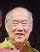

| 148,107,60,25 光 |
任光 名沃其 m. 李秀環 Ngìm Göng (Yūk Kǐ) Rèn Guāng (Wòqí) |
||||||||||||||||||||||||
|---|---|---|---|---|---|---|---|---|---|---|---|---|---|---|---|---|---|---|---|---|---|---|---|---|---|
| 149,108,61,26 前 |

仕烽 m. 許巧娥 Xù Füng m. Huī Kāo Ngõ Shìfēng m. Xǔ Qiǎo'é Patrick m. Anne |
秋金 | 仕清 李珠花 |
仕禛 伍彩霞 Lisa |
秋瓊 洪峇代 ANG |
仕強 Richard 曾碧玲 |
仕鈞 Victor 張淑珍 Susan |
仕發 Philip 陳美伶 |
|||||||||||||||||
| 150,109,62,27 遠 |
雅健 Ken 黎 Christine |
雅興 Michael 覃 Christina |
慧玲 Nicole 司徒永華 Wesley SETO |
俊偉 Mark |
俊傑 | 俊儀 | 麗儀 | 寶儀 | 洪力文 梁佩蓮 |
洪力添 雷甄妮 |
婉瑜 | 仁弘 | 育淵 | 菀昀 | 偉隆 William |
素冰 Jasmine |
|||||||||
| 151,110,63,28 遵 |
依莉 Elizabeth |
利安 Ryan |
嘉偉 Ethan |
嘉熙 Joshua |
嘉豪 Ian |
妍妡 | 嘉仁 | 嘉琳 | 梓熙 | 子彤 | 梓恒 | 紫晴 | 紫揚 | 婉瑜 | |||||||||||